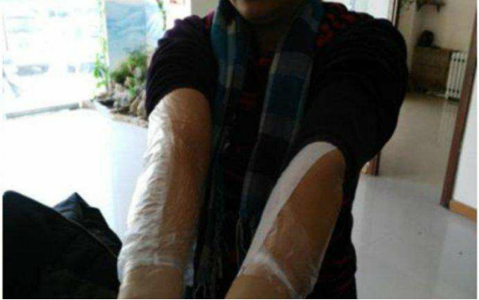
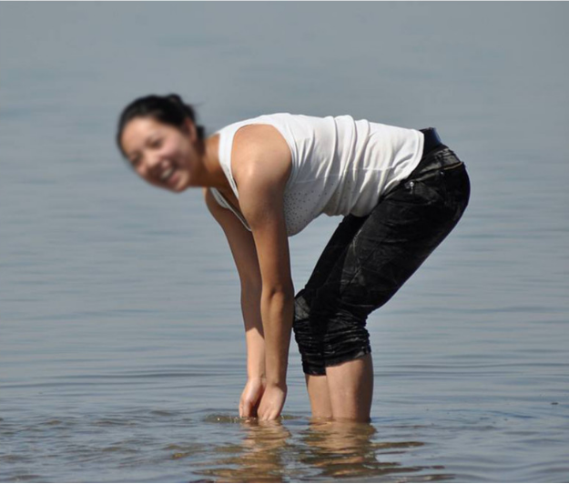
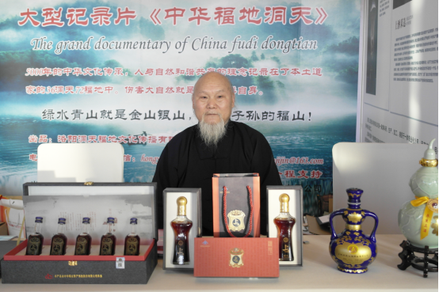
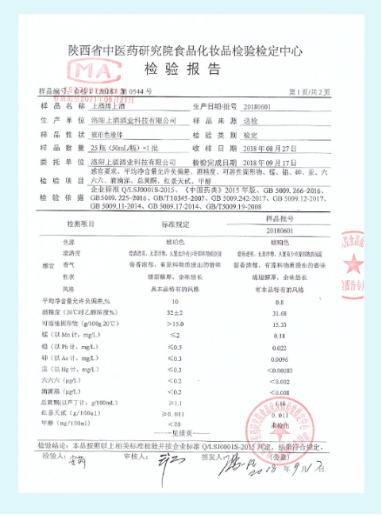
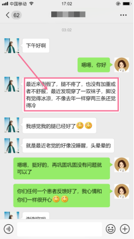
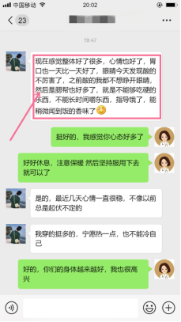

警惕！月子病不及时治疗或者调理不对导致风湿类风湿比例高达90%以上！！！
“产后出现手腕疼，大拇指关节疼，后背疼痛，咳嗽，大腿根部疼痛，膝盖疼，腰疼，颈椎僵硬疼痛，怕风怕冷，虚汗多，牙齿眼睛疼，头疼头晕，身体凉，关节响，部分患者还有眼眶疼痛，眼睛干涩多累，哭泣，发脾气，事物模糊，体弱多病，屁股疼等症状，这些统称为月子病”
 如果您或者你周围的朋友家人们长期经受产后月子病的困扰，请务必花三分钟认真阅读全文！
如果您或者你周围的朋友家人们长期经受产后月子病的困扰，请务必花三分钟认真阅读全文！
几年前，两个事，一个让我内心高兴不已，一个让我痛苦的要死，高兴的是我迎来了自己的宝宝，健康聪明，我幸福的眩晕；而痛苦的是我被月子病缠上了，看似小病，却折磨了我多年，使我在精神和生活上受尽折磨。
所幸同学介绍了一款产品，使我得以康复，康复后的生活真的太美好了，逛街，旅游，游泳，穿裙子....都不再是奢望了，在此我分享出来，希望能帮到更多的姐妹。
我今年32岁，生了两个孩子，头一个月子不注意，后来就腰困，失眠，有点抑郁，右手中指第一节弯曲就会胀痛。第二个月子是17年12月冬天，睡觉把胳膊放在被子外面了，然后就凉，有时困，疼，胳膊肘，肩膀，手指也发麻，大腿侧面凉，膝盖疼，喉咙疼，因为在产后3个月出去受风了，现在一吹凉风，头就晕呼呼的疼，脾气大，爱出虚汗，出汗后觉得冷，眼睛困，涩，右边眼眶疼，抵抗力变差，爱感冒，入睡慢，偶尔还失眠，睡着了也喜欢做梦，记忆力也跟着减退了。身体湿寒重，容易便秘，爱放屁，站的时间长了或者走路时间长了腰疼，后脚跟和膝盖也会疼。
在月子里，我也不知道怎么了，总是莫名其妙的想发火，想哭。后来在网上各种查，发现我可能患上了产后抑郁症，可是也不知道用什么办法来调理，老公和婆婆都只会围着孩子转，也没人在意我，亲戚朋友也不可能天天都来我家陪我。平时也就只能靠上网打发时间，那会一哭就上网，上网就更想哭，就这样上网和哭，后来眼睛视力就下降了。
三十多天的时候要回老家办满月酒（就是我做月子的时候，亲戚朋友送礼了，我们请大家一起吃顿饭），回乡下的时候，那板凳冷的刺骨，当时感觉没什么，哪知道后来我的屁股痛的要命。
四十多天的时候，老大发烧，我没想到太多，就抱着老大往医院跑，当时天冷，穿着厚棉袄，戴着厚帽子，一路上也还是感觉风往脑子里钻，还有小腿，在这之后月子病的症状慢慢就显现出来了，每次到变天的时候，腿痛发胀，每次不舒服的时候就会跟我老公吵架，吵完了心情更糟，病还是始终在哪里，家里生活一团糟！！！

听大学同学说，可以试试拔罐，火疗。我一听就立马找了一个理疗馆，办了一张4千多的综合理疗卡，稍微有点希望，就想赶紧试试，结果，拔完罐，身体黑红了一大片，师傅说身体湿气太重了，那种疼痛实在受不了，后来也没有办法，就改成了艾灸，但最终效果也不理想。
老公后来也是心疼我，千方百计在外面找了一些偏方，最简单的是鲜生姜和红糖熬成羹，还有用红高粱根煮鸭蛋，我连着吃了两个月，身体的疼痛一点都没减轻。

试了那么多办法，始终不见效果，我都开始怀疑是不是我自己的问题了，每天感觉自己下岗后像个木头一样，看着可爱的孩子，不能抱，不能照顾，还得别人照顾我，我感觉自己就像个废物，而且我的脾气越发暴躁，老公那时候都有点怕我，天天下班很晚才回来，人家说三个月之后就可以同房了，可我没有一点性趣，老公一动我，我就觉得很烦，现在老公动不动就找借口不回家，说实话，那段时间我真的担心他会出轨。
一次偶然的高中同学聚会，很多10多年没见过面，没联系过的老同学又重新聚在一起了，老班长看我憔悴了很多，就果断给我推荐了老师的联系方式
以前她和几个姐妹都有与我一样的症状，都是在那里治好的，说真的当时我也没抱什么希望，因为失败的太多了，各大医院也去了不少，偏方试的很多，也不见好转！
大概过了一周后，头疼头晕的厉害，肩膀僵痛，我也是死马当作活马医，试着联系了一下班长给我推荐老师的联系方式，让我很是意外。
老师很有耐心的询问了我当前的症状，一一给我进行了病情分析，定制符合我症状的治疗方案，不像其他地方的老师胡乱推荐，突然内心产生一种好感和治疗的信心，抱着试试的心态，在线支付一疗程后，老师就安排把产品给发到家了，收到后通过微信指导给我调理，很是认真。
持续使用，一周下来关节四肢疼痛缓解了很多，头痛也减轻了，手脚不像以前那么冰冷了，体内感觉有股热气在上升，心情也好了很多；以前双腿发沉发酸，乳胀，小腹坠痛都没有了；用药两周后，体内排出很多淤血，这应该就是老师所说的恶露吧！我的身体得到了明显的改善，我对治疗也充满了信心，心情也好了很多，家里生活也和谐多了，坚持使用3个疗程下来，膝盖，手指，脚后跟，头痛，身体冰凉的症状都没有了，还可以骑着电动车上给你办了，跟正常人没有两样了，后来我婆婆用了这种方法颈肩腰腿痛，膝盖痛，也都没有了，效果非常好，真心感谢老师的帮助！！！
 月子病的痛苦只有患过月子疾病的人才能体会得到，我仅以过来人的经验告诉姐妹们：治疗真的要坚持，这话说起来感觉很苍白，可是坚持真的很有效，只有度过了那个阶段，大家才能真的康复起来。
月子病的痛苦只有患过月子疾病的人才能体会得到，我仅以过来人的经验告诉姐妹们：治疗真的要坚持，这话说起来感觉很苍白，可是坚持真的很有效，只有度过了那个阶段，大家才能真的康复起来。
我现在天天还可以泡游泳池......那些短衣短裤，天天
穿也没感觉冷了，今年夏天我还天天都在空调房里呆着，关节也没在疼了，非常感谢老师帮调理，让我真正的重获新生。

在自己身上，那种全身游走性疼痛的感觉只有自己最清楚，产后风几乎把我折磨疯了，偏方试遍，花了不少钱，不如老师产品的疗效！！！所以在这里写下我的故事，希望更多的患者可以康复，摆脱月子病的困扰。
建议你试试，希望能帮到你！可以好好翻翻微信里的朋友圈，多少人治好了产后月子病，请分享给更多的宝妈！让宝妈少受苦！

中国·“上酒”配方依据主要来源于道家养生秘方《普济方》诸虚门，补气益精髓篇“黑丸子”。以珍贵的藏药“红景天”、“鹿茸”、“淫羊藿”、“当归”，达到补气益精，肝肾同补，强心健体的作用。

中国·上酒
生产基地坐落在洛阳栾川5A级风景区老君山脚下，这里曾是道家创始人“太上老君”修仙、炼丹的地方。
公司拥有完全的知识产权、拥有符合保健食品GMP生产条件的厂房和设备，并与国内众多的科研机构和院校以及中国道教协会道医馆合作。不断创新、立志打造具有中国品牌的保健酒。
“蓝帽子”认证
国家食品药品监督管理局批准
中国·“上酒”，获得国家食品药品监督管理局批准的“蓝帽子”认证，特供“钓鱼台”国宾馆。产品质量由中华联合财产股份有限公司进行质量承保，并连续3年荣获中国企业家发展年会“新时代匠心品牌奖”，深受消费者的青睐关注。
精血从哪来的呢，“肾生精，精生髓，髓生血”，可以看出肾是精血的来源，所以调理月子病，关键在于补肾。
工作加班，加班熬夜，熬夜必伤肝。工作压力大，心情不好，万事不顺想发脾气必伤肝，可以说肝脏遭受的亏损是最大的。
宝妈们坐月子阶段肯定是要比平时身体更虚弱的，而且吃不好也睡不好，更要照顾小宝贝，对肝的损耗更大。
中医理论“子危及母”、肝的损耗必伤肾，而“损母益子”则是肾水养肝木，肝木不补好，就如同锅底的窟窿，一切成空！！！
中国·上酒
以“当归”、“鹿茸”、“淫羊藿”调肝养肝，补充熬夜伤肝带来的损伤，从源头补足日常生活所带来的肝亏肝损。同时肝功能的补足还可以优化血细胞的质量，能携带的营养物质更多，全面滋养全身!!！

洛阳上酒检测报告
中医讲：“调肝必养肾”，肝肾同源，肾属水，肝属木。肾的补足可以滋润肝木，肝肾同调，肝解毒、肾排毒，毒素的排出更有利于身体的补足。
中国·上酒以“鹿茸”、“淫羊藿”养肾补肾，同时运用了生物冷萃技术、纳米分子技术，不仅保持了生物活性精华，而且让药物成分更加容易吸收。直达肾脏，补充肾功能亏损，保障“血气”旺盛。
传统产品往往只注重肝肾的调养，忽略了人体的“发动机”——心脉！！！
一台汽车跑得性能好不好，往往取决于发动机的好坏，人体也是这样！
中国·上酒
以“当归”、“红景天”养心健心，强心脉，壮体魄，让你的体力更加充沛，让血液能“泵”至四肢各处，改善月子病畏惧风寒的状况，同时还可以增强体魄。

女子以血为本，而造成血虚的原因呢，就在心经、肝经、肾经上。
“心主血” ，心主血:所谓“奉心化赤”,是心有生血的功能,饮食物经过脾胃的运化,化为水谷之精气,化为赤色血液。
“肾主骨，骨生髓，髓生血”，血液的多少，一定程度上也取决于肾的强弱。
肝呢？“肝藏血以济心”，肝有贮藏血液，调节血量的功能.
“养肝不调肾，等于一场空”，洛阳上酒从调肝养肾入手，先滋肝木，后补肾脏，再补心经。
肝肾同补才能补足月子期间体虚的亏损，同时心脉的调理能把血液更好的送入四肢各处、强筋健骨，增强身体免疫力，彻底告别畏风畏寒！！！
在中医学上认为痛经是因为女性在月经期间体内的气血遇到了运行不畅、气血虚亏导致的疼痛。疼痛特点是喜温、喜按，得温痛减，得冷痛加重，这种痛属于寒性...
所有痛经来大姨妈时候不要捶腰！！！不要吃生冷食物！！！
“心主血，肝藏血，脾统血”，而“肾主骨，骨生髓，髓生血”。而中国·上酒就是主要针对这方面，养肝，补肾，强心，健脾、益肺！！！补气血不足，通经脉不畅！！！同时气血充足，心脉强劲，自然手冷脚冷就不复存在！！！
月子病虽然不好调理，但是也不是什么绝症，大家不要害怕，关键在于只要选对方法，坚持下来，就一定能将月子病赶跑，月子病治疗必须要趁早，不然伴随终生就划不来了，在这里我还是要感谢一下帮助我的老师，她不仅救了我，也救了我的家庭。
李君英：大家好，我叫李君英，是一名教师，月子病有一年多的时间了，我是产后风，手指胀痛，麻木，毛细血管紫色，膝关节痛，凉风一吹，整个身体都是刺骨的疼痛感，我找了很多的老师；但是我发现他们的方法对我的月子病没有任何改善，后来经过别人介绍推荐使用老师的产品。
让我摆脱了长久的困扰，调理20天后，的确明显感觉有所好转，人也轻松多了，就算不穿袜子在太阳底下关节也不疼了，脸色也好多了，按照微信上老师的指导，就用了2个疗程，难以置信的浑身窜痛感全部都消失了，效果真的是太神奇了。我非常感谢老师的产品让我告别了月子病，恢复了健康。
王倩：我叫王倩，5年的产后月子病，折磨缠身，今年36岁，在铁路调度室上班，平时工作比较忙，经常加班熬夜，腰也一直不好，再几家医院都治过，但是都不见好转，有几次躺在床上腰疼的都直不起来，后来在北京医院查出得了产后风，说是月子病没养好引起的，家人多方打听偏方，也使用了不少，不见效果。后来在外地的妹妹，得知后为我定了一个月的产品
用了一周左右，以前夜里经常咳嗽，腰疼睡觉翻身都困难，肩膀酸痛的症状有快有了很大改变，不怎么咳嗽了，白天我也可以穿裙子，凉血了，夜里睡觉翻身也不疼了，后来我就很开心的按老师的祝福，坚持按要求使用，两个周期后去检查身体，医生都吃惊了，僵硬的肢体恢复了正常状态，随后又让老师给我拿了一个周期巩固，至今一直都很好，真是太出乎我的意料了。



精彩评论

教书育人小园丁
我也是找老师调理过来的，我月子病好多年了，膝盖受冷难受的要死，听了老师的仔细分析，调理了三个月多，效果真心不错，以前夏天不能穿裙子的，现在都可以到海边下水了
1分钟前

狭路相逢
对啊，我也是运气比较好，可能是缘分吧，让我遇到了老师，我是身体不好绝经一年多了，老师很耐心，有啥不懂的都可以加一下老师，尽早咨询一下
1分钟前

煮酒自饮
唉，前些年做生意赔了，为了还贷我跟老公每天起早贪黑，省吃俭用，坐月子时候没怎么注意，结果身体就不好了，真心后悔没有早点认识老师。
1分钟前
花园宝宝
50岁能恢复月经健康 健健康康身体简直太好了！
1分钟前
那年冬天
我是那年冬天，孩子发高烧啊，背着大孩子去看病，结果就是月子病，腿冷膝盖冷，好多年了，看过的医生也不少，我都已经放弃了，还好遇到了老师
2分钟前

大白兔奶糖
我比你们年轻，我是坐月子时候快一个月没洗头，一个月啊，天啊，我真心受不了，结果就洗了一次头，我当时都可后悔，就不能忍忍吗？幸好是朋友介绍给我老师的联系方式，不然还不知道受罪到啥时候呢
4分钟前